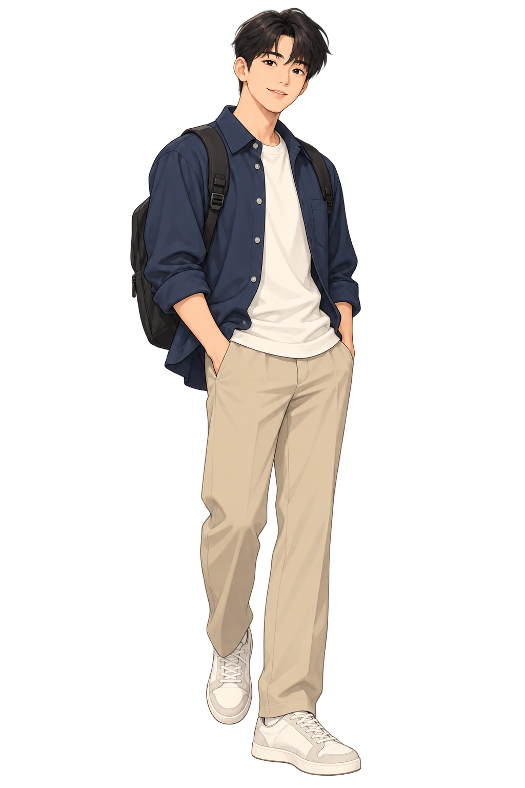

Shadowing
Выбери реплику, послушай эталон и повтори. Замедление помогает услышать окончания и ритм фразы.
Выбери одну из реплик.

Выбери реплику, послушай эталон и повтори. Замедление помогает услышать окончания и ритм фразы.
Выбери одну из реплик.
Микрофон запишет твою попытку. Браузер распознает текст, затем Gemini даст короткий учебный отзыв.